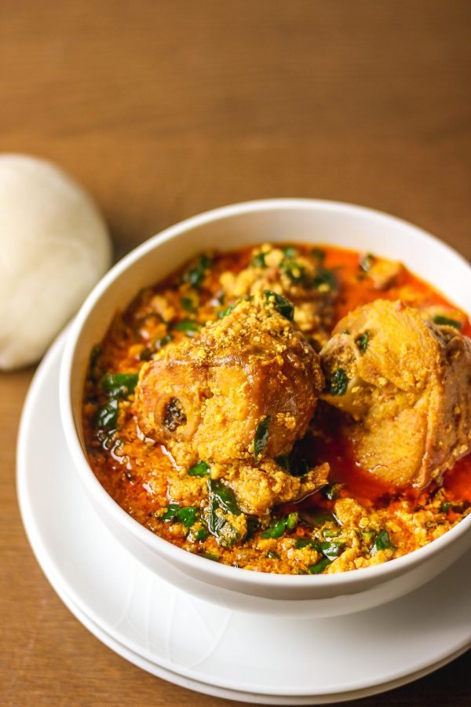

Egusi Soup

What is Egusi Soup?
Egusi Soup is very delicious. It's definitely the best soup that I've ever tasted. It is so simple to make and doesn't take a lot of time.
Egusi soup is usually prepared with pounded yam, eba, amala,rice or any other swallow of your choice. I made this soup with smoked turkey but you can use any meat of your choice.
Ingredients
- 2 cups of ground melon
- 12 pieces of smoked turkey
- salt and pepper
- 1 large chopped onion
- 2 red bell peppers
- 2 habanero peppers
- Dried prawns
- Palm oil
- 2 chicken bouillon
- 3 cup of spinach
How to Make Egusi Soup?
- Add ground melon to a bowl, 1 cup of water and mix to form a paste. Set aside.
- Turn stove on medium heat. Place a large pot on medium heat. Add palm oil and heat for 3 minutes
- In a blender, blend together onion, red bell peppers, and habanero peppers. Pour into pot. Bring to a boil for 5 minutes.
- Add the egusi paste in small portions and reduce heat. Do not stir. Just cover it with a lid. Cook for 10 minutes.
- Remove the lid and gently stir the soup. It will look lumpy but you can break it into the desire size.
- Add smoked turkey and beef stock. Stir until combined. Add dried prawns and chicken bouillon.
- Continue to cook for 15 minutes or more (Until your meat is tender). Check and stir to avoid burning the food. Add chopped spinach and stir for 5 minutes.
- Turn off the stove and allow to cool before serving.